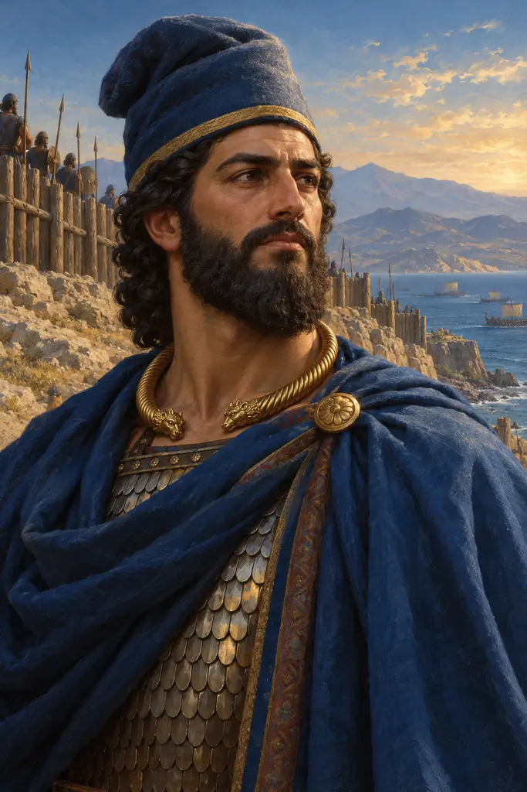
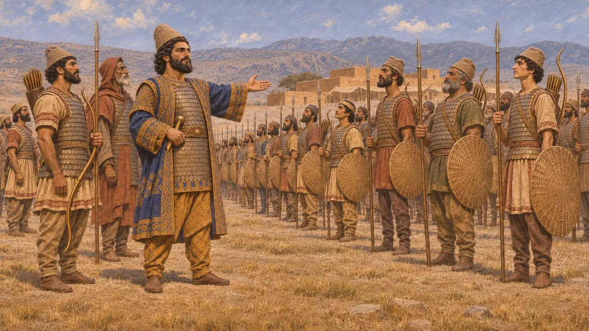
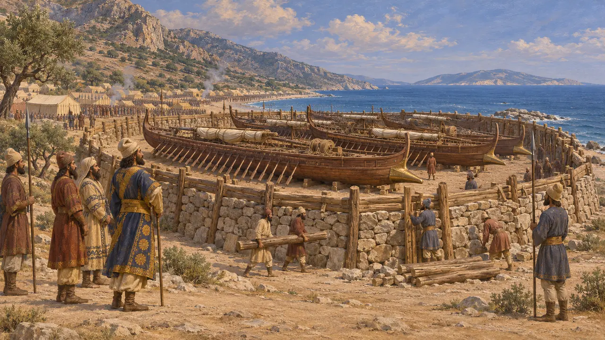
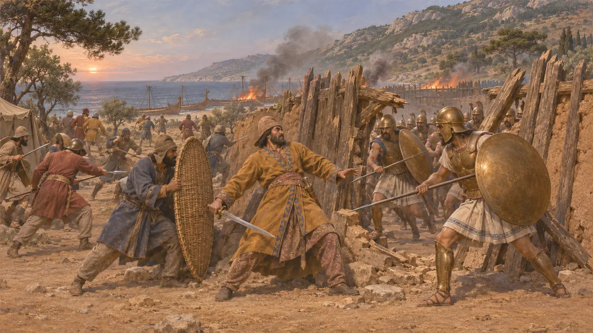
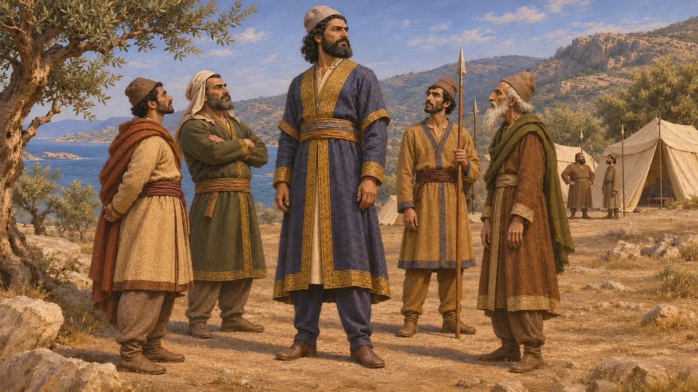
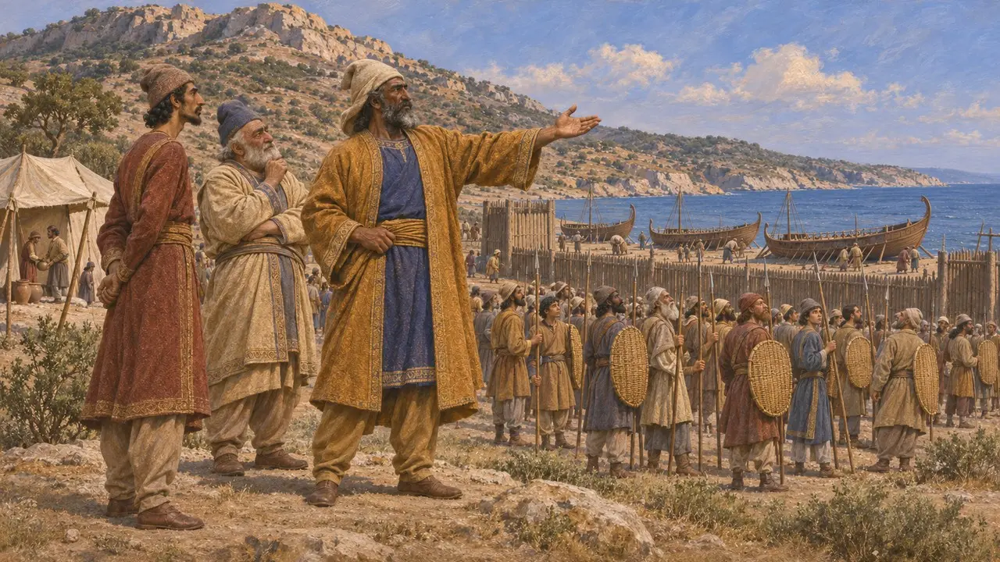

Tigranes
Ahameniş soylusu, Medlerin ve Mykale'deki ordunun komutanı, ö. MÖ 479
Tigranes, Kserkses'in Yunanistan seferinde Med birliğine komuta eden, Ahameniş kraliyet soyundan bir Persti. Daha sonra Kserkses'in İonia'yı korumak için geride bıraktığı kara ordusunun başına geçti ve MÖ 479'da Yunanlılar Mykale'deki Pers ordugâhını basıp ele geçirdiğinde öldürüldü. Onun hakkında bilinenlerin neredeyse tamamı Herodotos'tan gelir.
Oyunda: Oyunun kroniği Tigranes'i Medlerin başında bulunan ve Mykale'de komuta ederken düşen bir Ahameniş olarak sunar. Bu, onun hakkındaki başlıca kaynak olan Herodotos'u izler.

Medlerin komutanı
Antik anlatıHerodotos, Kserkses ordusunun toplanmasında Ahameniş soyundan Tigranes'i Medlerin komutanı olarak sayar. Medlerin Persler gibi donatıldığını söyler: keçe başlıklar, kollu tunikler, pullu zırhlar, örgü kalkanlar, kısa mızraklar ve büyük yaylar. Med birliklerinin başına bir Pers soylusunun getirilmesi, Pers krallarının üst düzey komutanlıkları kendi boylarından kişilere verme geleneğine uygundu.
Herodotus 7.61-62

İonia'yı korumak için bırakılan ordu
Antik anlatıHerodotos'a göre Kserkses, İonia'yı gözetim altında tutmak için Samos'un karşısındaki kıyıda, Mykale'de Tigranes komutasında bir kara ordusu bırakmıştı. MÖ 479'da Yunan donanması yaklaşınca Pers gemileri Mykale'ye yöneldi. Orada gemiler karaya çekildi ve taş ile keresteden bir surla çevrildi. Herodotos bu ordunun 60.000 kişi olduğunu söyler.
Herodotus 9.96-97

Mykale'de ölüm
Antik anlatıSpartalı Leotykhides ile Atinalı Ksanthippos komutasındaki Yunan donanması karaya çıkıp ordugâha saldırdı. Herodotos'a göre Atinalılar ve yanlarındaki birlikler siperi yarıp içeri girdi; diğerleri kaçtıktan sonra Persler küçük gruplar hâlinde savaşmayı sürdürdü. Dört Pers komutanından Artayntes ve Ithamitres kaçtı; Mardontes ve kara ordusunun komutanı Tigranes ise savaşarak öldü. Ardından Yunanlılar gemileri ve siperi yaktı.
Herodotus 9.102-106

Herodotos'un anlattığı adam
Antik anlatıHerodotos, Tigranes'in güzellik ve boy bos bakımından bütün Persleri geride bıraktığını belirtir. Başka Persleri de benzer sözlerle över: Plataia'da öldürüldükten sonra cesedi Yunanlılarca saflar arasında dolaştırılan Masistios'u ve bizzat Kserkses'i. Bu ayrıntı gerçek olabilir; ama Herodotos'un düşman saflarındaki önemli kişileri öne çıkarma alışkanlığına da uyar.
Herodotus 9.96; Herodotus 9.25; Herodotus 7.187

Belirsiz kalanlar
TartışmalıBu Tigranes'in adını veren hiçbir Pers belgesi bilinmemektedir; dolayısıyla kariyeri yalnızca Yunan tanıklığına dayanır. Tarihçiler, Herodotos'un Mykale için verdiği 60.000 askerlik rakamını genellikle fazla yüksek bulur. Herodotos ayrıca Mykale'deki çarpışmanın Plataia'dakiyle aynı gün gerçekleştiğini söyler; pek çok araştırmacı bu tesadüften kuşku duyar. Herodotos bunu açıkça söylemese de Medlerin komutanıyla Mykale'deki komutanın aynı kişi olduğu genellikle kabul edilir.
Herodotus 9.100-101; P. Briant, From Cyrus to Alexander, 2002
Kaynaklar
- Herodotus, Histories 7.61-62, 9.96-106
- P. Briant, From Cyrus to Alexander, 2002
- A. R. Burn, Persia and the Greeks, 1962